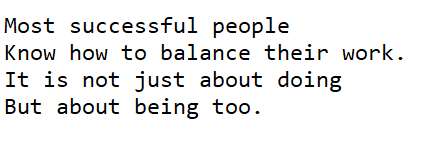

The Way to Feel Less Stuck Is to Know When to Go & When to Stop
One of the first things I learned by hiring a coach was to take it easy and find balance in what I do. I thought we will immediately go to the actions I needed to take, but although she gave me the plan 'learning to stop' was the first step.
It wasn't the first time I heard this expression. As I started journaling exercise, as was part of one writing course, the tip was to just write - no filter, whatever came to mind. After more of the month of writing every day and doing what I refer today as 'brain dump', I came back to my writing and noticed the pattern. I had many messages telling me to slow down, to stay in the moment, or simply to stop and reflect. (Which in the end led me to start my Stop with Ivana podcast.)

But it was one thing to hear it in my head, and completely another to hear it from someone else, and a person I greatly admired at that. What does it mean to stop? Why? What would that do? Although I didn't understand it, I gave it a try. Back then I wasn't aware of any scientific evidence supporting the fact (Which I reserched later, and realized it is a common practice by musicians. More on that here). I didn't know that some of the most successful people use breaks for their advantage.
It first even one minute was difficult to focus. I split it in 10 minutes for 3 times in a day. Not that my focus was great, but I just went with it.
Stopping Benefits
What was interesting that over time, this is how I got the most inspiration and content for the posts I did on my website and social media. From that silence so many interesting things came up. After I was finished with my 10 minutes of 'no-doing' I had so many ideas to write.
Taking a break also helped me at my work. Whenever I felt stuck, or overwhelmed I learned to recognize it and take a short break. I believe this saved me a lot of running in circles, and ultimately gave me an opportunity to support my teams, and people I was coaching in the best way.
Next Steps...
Do you know how non-doing can support your doing today? How can you bring more inspiration and balance in your work? If you want to learn my Stopping Process join me on my new podcast.
Ref1) Stop with Ivana podcast, ivanapazek.com/podcast. Ref2) Live Your True Calling: From a Job That’s Eating You Alive to a Life You Love, by Ivana Pazek, ivanabooks.com. #coaching #shanghai #china #truecalling #ivanapazek